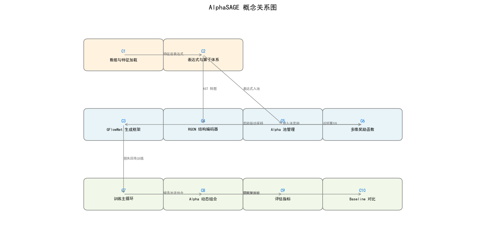
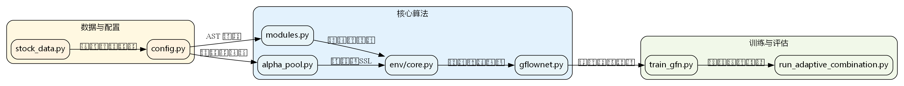

AlphaSAGE 深度教程
用 GFlowNet 多样化生成与 RGCN 结构感知重塑量化 alpha 挑挘的完整路径
项目简介
AlphaSAGE 是一个量化研究项目，它用 GFlowNet 采样多样化的 alpha 表达式轨迹，用 RGCN 捕捉表达式的语法结构，用 多维奖励（IC + SSL + 新颖度）同时鼓励预测能力、结构一致性与多样性。训练后用滚动 OLS 组合生成 Mega-Alpha，用 IC、ICIR、夏普、MDD 多维评估。
本教程分 10 章，从数据底层到评估指标，从 GFlowNet 生成到 Mega-Alpha 组合，依次讲解 AlphaSAGE 的核心设计与真实代码。每章都含真实代码片段与设计权衡分析。
概念关系图

这张图展示了 10 个概念之间的依赖关系。从左到右依次是：数据层（C1、C2）→ 核心层（C3、C4、C5、C6）→ IO 层（C7、C8、C9、C10）。推荐按照 1→10 顺序阅读。
目录
- 第 1 章
第 1 章：数据与特征加载StockData —— 把 Qlib 行情原料整理成张量，是整个 AlphaSAGE 的数据源头 - 第 2 章
第 2 章：表达式与算子体系QLibStockDataCalculator 与算子词表 —— 连接语法与数值的桥梁 - 第 3 章
第 3 章：GFlowNet 生成框架EntropyTBGFlowNet —— Trajectory Balance 损失与熵正则项的采样框架 - 第 4 章
第 4 章：RGCN 结构编码器把 RPN 序列转成关系图，用 RGCNConv 读出表达式结构嵌入 - 第 5 章
第 5 章：Alpha 池管理AlphaPoolGFN —— 维护多样化 alpha 候选集合的“选秀节目” - 第 6 章
第 6 章：多维奖励函数GFNEnvCore.reward 与 compute_ssl_reward —— IC + SSL + 新颖度三路信号合成 - 第 7 章
第 7 章：训练主循环train_gfn.py 的 train 与 WeightScheduler —— 乐队指挥、采样轨迹、回传梯度 - 第 8 章
第 8 章：Alpha 动态组合run_adaptive_combination.py —— 滚动筛选 + OLS 回归生成 Mega-Alpha - 第 9 章
第 9 章：评估指标IC、ICIR、RankICIR、夏普与最大回撤 —— 把预测转成可比的健康度报告 - 第 10 章
第 10 章：Baseline 对比PPO、QCM、AFF 三类基线 —— 与 GFlowNet 同台竞技的对照组
数据流总览

AlphaSAGE 的完整数据流可以用一句话概括：Qlib 行情 → StockData 张量 → 表达式求值 → AlphaPool 筛选 → RGCN 编码 → 多维奖励 → GFlowNet 采样 → TB 损失 → 参数更新 → pool_*.json → 滚动 OLS → Mega-Alpha → 评估指标。
训练阶段生成 alpha 池，组合阶段用池中 alpha 生成 Mega-Alpha 预测。评估阶段输出 IC、ICIR、夏普、MDD 等可比指标。三个阶段各自独立又互相依赖，形成一个完整的闭环。
论文速览
AlphaSAGE 的核心论点包括：
多样化生成：用 GFlowNet 采样与奖励成正比的 alpha 轨迹，避免了传统 RL 的贪婪问题。
结构感知：用 RGCN 捕捉表达式的语法结构，让模型“看懂”算子与操作数的关系。
多维奖励：IC + SSL + 新颖度三路信号加权合成，同时鼓励预测、一致与多样。
动态组合：滚动 OLS 让组合权重随市场动态调整，适应性强。
同框架对比：与 PPO、QCM、AFF 基线同台竞技，公平证明方法的优越性。